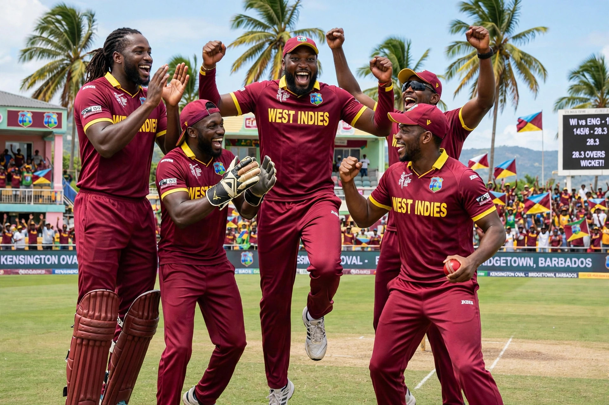

| West Indies | |
|---|---|
| Nickname | Windies; Men in Maroon |
| Association | Cricket West Indies |
| Test status | 1928 |
| World Cup titles | 1975, 1979 |
The West Indies cricket team, nicknamed the Windies, is a multinational men's cricket team representing the mainly English-speaking countries and territories of the Caribbean. It is a full member of the International Cricket Council with Test, One Day International and Twenty20 International status, administered by Cricket West Indies.

Granted Test status in 1928, the West Indies rose under captains such as George Headley and, after 1950, Frank Worrell, the first Black captain appointed for a full series — a landmark for the region's post-colonial identity. Under Clive Lloyd the team dominated world cricket from the mid-1970s to the early 1990s: it won the first two Cricket World Cups (1975 and 1979), fielded a feared pace attack of bowlers such as Michael Holding, Andy Roberts, Joel Garner, Malcolm Marshall and Courtney Walsh, and batsmen of the calibre of Viv Richards and Gordon Greenidge.
After the retirement of its golden generation the side declined in Tests and ODIs, despite the batting records of Brian Lara — holder of the highest individual Test score (400 not out) and first-class score (501 not out). The team found renewed success in the shortest format, winning the ICC World Twenty20 in 2012 and 2016, the first side to win it twice.